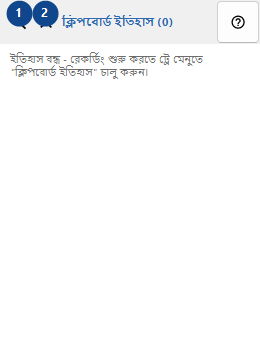
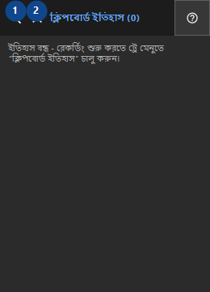

ক্লিপবোর্ড ইতিহাস
এর কাজ
ইতিহাস কেবল স্থানীয়ভাবে সংরক্ষিত হয় এবং আপনার অ্যাকাউন্টের জন্য Windows DPAPI দিয়ে এনক্রিপ্ট করা হয়।


ব্যবহারের ক্রম
নম্বর দেওয়া ব্যাখ্যাগুলি পড়ুন, প্রয়োজনীয় মান বেছে নিন এবং উইন্ডোর নির্দেশ দিয়ে এগিয়ে যান।
উপাদান
1. ইতিহাসে খুঁজুন
উল্লিখিত কাজের জন্য এই নির্দেশ ব্যবহার করুন। মেনে নেওয়ার আগে নিশ্চিতকরণ পড়ুন।
আপনার শর্টকাট2. বন্ধ করুন
উল্লিখিত কাজের জন্য এই নির্দেশ ব্যবহার করুন। মেনে নেওয়ার আগে নিশ্চিতকরণ পড়ুন।
আপনার শর্টকাট